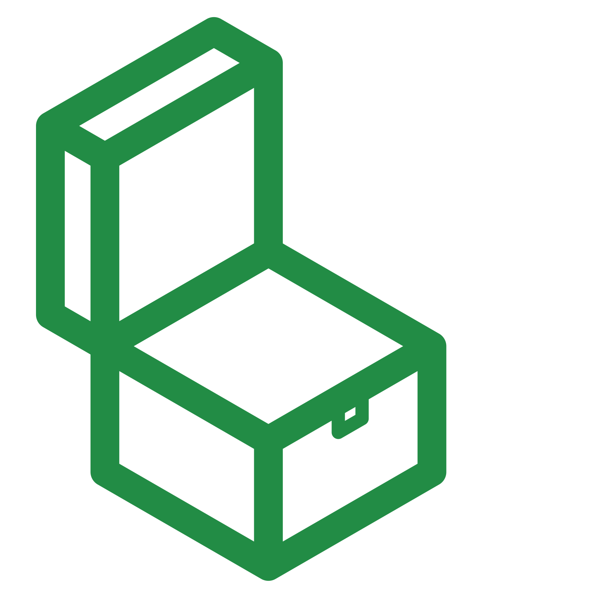

Ресурси
Порахуй блоки, стаки та шалкери для наступної великої будівлі.
Розраховуй ресурси, координати та механізми. Менше підрахунків — більше часу для гри.
Швидкий сайт без реклами, який працює так, як потрібно гравцеві під час гри.
Правильне округлення для від'ємних координат.
Результат одразу під час введення, копіювання в один клік.
Темна тема без реклами та затримок.
Повна адаптація термінології та назв предметів.